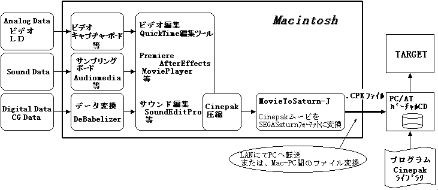

★MOVIE TOOLS GUIDE
★Cinepak for SEGASaturn
★MOVIE TOOLS GUIDE
★Cinepak for SEGASaturn
プログラム | 説明 |
Movie To SATURN_J | Cinepak圧縮したQuickTimeムービをSEGASATURN用フォーマッ |
Cinepakライブラリ | Cinepakムービを再生するためのSEGASATURN用ライブラリ。本 |
サンプルプログラム | Cinepakライブラリを使用したサンプルプログラム |
Film Analyzer | SEGASATURN用Cinepakムービを解析するためのユーティリティ |
図1.1 システムイメージ

項目 | 仕様 | 備考 |
フレームレート | max30fps | ・32K色再生 |
フレームサイズ | タテ：240pixel以下（8の倍数） | |
カラー | 32K色（圧縮データは16M色）、16M色 | |
圧縮率 | 約1/10〜1/25 | Quality、キーフレーム設定、 |
キーフレーム | 任意設定 | |
サウンド | PCM非圧縮 | PAN設定、ボリューム調整可 |
CD-ROMフォーマット | Model、Mode2Forml | Mode2Form2は使用できない |
再生 | ・メモリ再生、CD再生 | |
コマ落し | 再生が間に合わないとき、キーフレーム直前の | |
連続再生による | max1時間 | 連続再生で無限ループとなる再生不可 |
スーパー | クロマキー処理により指定カラーを透明色に変換 | キーアウト範囲の設定可 |
★MOVIE TOOLS GUIDE
★Cinepak for SEGASaturn